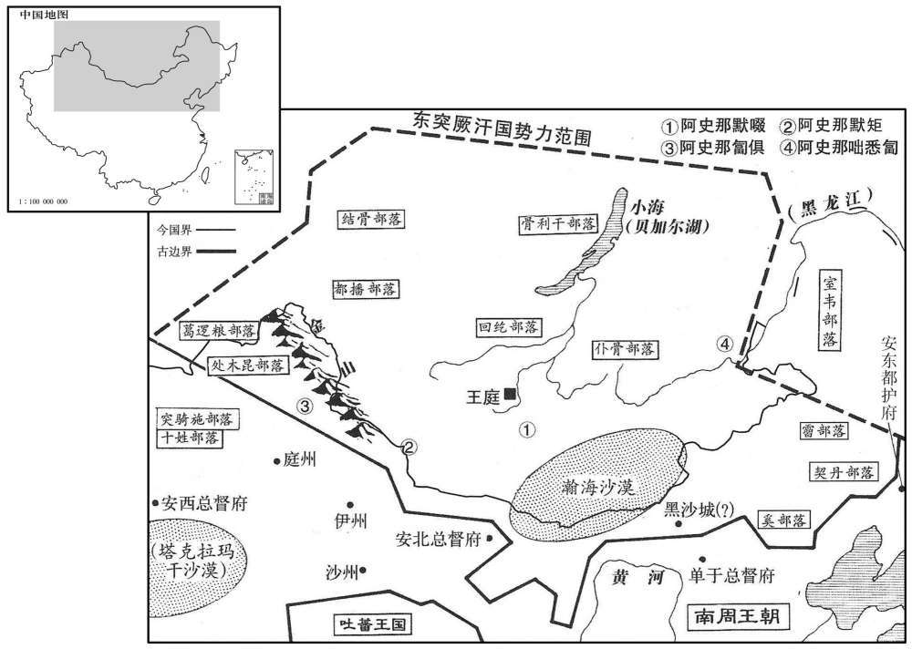

公元699年资治通鉴：本年记事、原文与白话对照
按原书编年位置阅读；追叙和史论不等于本年发生的事件。白话采用所据译本，缺译不以生成译文补齐。
卷206 · 本年记事
公元699年 · 唐则天顺圣皇后圣历二年
二年〔（己亥、六九九）〕
本年事件索引（现代整理）
- 武则天在通天宫行告朔礼
- 皇嗣李旦封相王并兼任太子右卫率
- 设立控鹤监，员半千因反对而被贬
- 吉顼、魏元忠同任平章事
- 宗楚客、宗晋卿因贪赃被贬流放
- 武则天赐太子李显姓武并大赦天下
- 武则天生重眉，群臣祝贺
- 黄河南北设武骑团备御突厥
- 武攸宁罢任夏官尚书
- 武则天巡幸嵩山，阎朝隐请以身代祷
- 吐蕃赞普诛杀论钦陵，论赞婆及其部众归唐
- 魏元忠任天兵军大总管以备突厥
- 娄师德任副总管安抚吐蕃归降者
- 武则天令李显、李旦、太平公主等与武氏盟誓
- 武攸宜留守西京
- 吐谷浑一千四百帐归附
- 突骑施乌质勒遣子朝见，解琬奉命安抚十姓部落
- 州县官未经诏令不得擅自立碑
- 王及善因反对张易之兄弟无礼而请求退休
- 娄师德举荐狄仁杰，狄仁杰得知后自愧
- 武三思任内史
- 武则天巡幸福昌后返回神都
- 王及善去世
- 黄河泛滥，冲毁济源千余家房舍
- 论赞婆归唐，武则天任其为右卫大将军
- 李显、李旦的儿子解除幽禁
- 韦嗣立请求振兴国学并赦免酷吏冤案，未获准
- 韦嗣立代兄任凤阁舍人
- 默啜任命弟弟、儿子统领突厥各部

本年形势与背景参考图
正月，丁卯朔，告朔于通天宫。〔告，古沃翻，又如字。〕
正月，丁卯朔（疑误），太后在通天宫行“告朔”之礼。
壬戍，以皇嗣为相王，领太子右卫率。〔相，息亮翻。率，所律翻。〕
壬戌（初六），朝廷封皇嗣为相王，领太子右卫率。
甲子，置控鹤监丞、主簿等官，〔先已置控鹤监，今方备官。〕率皆嬖宠之人，〔嬖，卑义翻，又博计翻。〕颇用才能文学之士以参之。以司卫卿张易之为控鹤监，银青光禄大夫张昌宗、左台中丞吉顼、殿中监田归道、夏官侍郎李迥秀、凤阁舍人薜稷、正谏大夫临汾员半千〔临汾县带晋州，本平阳县，隋更名。半千本彭城刘氏，十世祖凝之事宋，及齐受禅奔魏，以忠烈自比伍员，因自姓员。员，音云。〕皆为控鹤监内无奉。稷，元超之从子也。〔薜元超事高宗。从，才用翻。〕半千以古无此官，且所聚多轻薄之士，上疏请罢之；由是忤旨，〔上，时掌翻。忤，五故翻。〕左迁水部郎中。
甲子（初八），朝廷设置控鹤监丞、主簿等官，他们大多是受太后宠爱的人，同时也用一些有才能的人和文学之士以相配合。任用司卫卿张易之为控鹤监，银青光禄大夫张昌宗、左台中丞吉顼、殿中监田归道、夏官侍郎李迥秀、凤阁舍人薛稷、正谏大夫临汾人员半千都任控鹤监内供奉。薛稷是薛元超的侄子。员半千认为古代没有这样的官职，而且现在所聚集的又多是一些轻浮放荡的人士，因此上疏请求废除，于是冒犯太后旨意，被降职为水部郎中。
腊月，戊子，以左台中丞吉顼为天官侍郎，右台中丞魏元忠为凤阁侍郎，并同平章事。
腊月，戊子（初二），朝廷任命左台中丞吉顼为天官侍郎，右台中丞魏元忠为凤阁侍郎，一并任同平章事。
文昌左丞宗楚客与弟司农卿晋卿，坐赃贿满万余缗及第舍过度，楚客贬播州司马，晋卿流峰州。〔峰州，汉交趾麊冷县地。吴置新兴郡，晋改新昌郡，齐置兴州，隋初改华州，十八年改峰州。大业废州，并入交趾为嘉宁县，唐武德四年复置峉州。旧志，播州去京师四千五百三十里，东都四千九百六十里。峰州至京师七千七百一十里。〕太平公主观其第，叹曰：「见其取处，〔处，昌吕翻。〕吾辈乃虚生耳。」
文昌左丞宗楚客与弟弟司农卿宗晋卿，因贪赃受贿达万余缗钱和住宅过度豪华，宗楚客被降职为播州司马，宗晋卿被流放峰州。太平公主观看他们的住宅后，感叹说：“看到他们的住所，我们都白活了。”
辛亥，赐太子姓武氏；赦天下。
辛亥（二十五日），太后赐太子姓武氏；大赦天下。
太后生重眉，成八字，〔重，宜龙翻。〕百官皆贺。
太后长出重叠的眉毛，呈八字形，百官都祝贺。
河南、北置武骑团以备突厥。〔骑，奇寄翻。〕
唐朝在黄河南北设置武骑团，以防备突厥 。
春，一月，庚申，夏官尚书、同凤阁鸶台三品武攸宁罢为冬官尚书。
春季，一月，庚申（初四），夏官尚书、同凤阁鸾台三品武攸宁被罢免为冬官尚书。
二月，己丑，太后幸嵩山，过缑氏，谒升仙太子庙。〔缑氏县属洛州。升仙太子，周王子晋也。世传晋升仙后，桓良遇之于嵩山，曰：「七月七日，待我于缑氏山头。」果乘白鹤驻山顶，举手谢时人而去。后人因为立祠，后加号升仙太子。杜佑曰：缑氏县，古滑国。缑，工侯翻。〕壬辰，太后不豫，遣给事中栾城阎朝隐祷少室山。朝隐自为牺牲，〔朝，直遥翻。〕沐浴伏俎上，请代太后命。太后疾小忥，厚赏之。丁酉，自缑氏还。
二月，己丑（初四），太后前往嵩山，途经缑氏县时，参拜升仙太子庙。壬辰（初七），太后得病，派遣给事中栾城人阎朝隐向少室山神求福。阎朝隐自己作祭品，沐浴后伏在盛祭品的礼器上，请求代替太后承担病痛。太后病稍好，便给他丰厚的赏赐。丁酉（十二日），太后从缑氏返回。
初，吐蕃赞普器弩悉弄尚幼，论钦陵兄弟用事，皆有勇略，诸胡畏之。钦陵居中秉政，诸弟握兵分据方面，赞婆常居东边，为中国患者三十余年。器弩悉弄浸长，〔长，知两翻。〕阴与大臣论岩谋诛之。会钦陵出外，赞普诈云出畋，集兵执钦陵亲党二千余人，杀之，遣使召钦陵兄弟，钦陵等举兵不受命。赞普将兵讨之，钦陵兵溃，自杀。夏四月，赞婆帅所部千余人来降，〔使，疏吏翻。将，即亮翻。帅，读曰率。降，户江翻。考异曰：实录：「赞婆及其兄弟莽布支等来降，以莽布支为左羽林卫员外大将军，封安国公。」按赞婆弟名悉多于敷论。明年，吐蕃将曲莽布支寇凉州，与唐休璟战。朱详实录所云。今刚去。〕太后命左武卫铠曹参军郭元振与河源军大使夫蒙令卿将骑迎之，〔夫蒙，姓也。姓谱，夫蒙羌复姓，后秦有建威将军夫蒙大羌。〕以赞婆为特进、归德王。钦陵子弓仁，以所统吐谷浑七千帐来降，拜左玉铃卫将军、酒泉郡公。
当初，吐蕃赞普器弩悉弄还年幼，论钦陵兄弟掌权，他们都有勇力谋略，各部胡人都畏惧他们。论钦陵在朝中执政，几位弟弟领兵在外镇守各地，其中论赞婆常驻守东边，构成对唐朝的祸患三十多年。器弩悉弄逐渐成长，秘密与大臣论岩谋划处死他们。遇上论钦陵外出，赞普便假称出去打猎，召集士兵逮捕并杀死论钦陵的亲属、党羽二千余人，派遣使者召论钦陵兄弟回来，论钦陵等起兵，不接受命令。赞普领兵讨伐他们，论钦陵兵败后自杀。夏季，四月，论赞婆率领部下一千余人前来投降，太后命令左武卫铠曹参军郭元振与河源军大使夫蒙令卿领骑兵迎接他，任命赞婆为特进、归德王。论钦陵的儿子弓仁，带领他统辖的吐谷浑七千帐投降唐朝，被任命为左玉钤卫将军、酒泉郡公。
壬辰，以魏元忠检校并州长史，充天兵军大总管，以备突厥。
壬辰（初八），朝廷任命魏元忠为检校并州长史，充任天兵军大总管，以防备突厥。
娄师德为天兵军副大总管，仍充陇右诸军大使，专掌怀抚吐蕃降者。
娄师德任天兵军副大总管，仍充任陇右诸军大使，专门掌管安抚投降的吐蕃人。
太后春秋高，虑身后太子与诸武不相容。壬寅，命太子、相王、太平公主与武攸暨等为誓文，告天地于明堂，铭之铁券，藏于史馆。
太后年纪大了，恐怕自己死后太子与武氏诸王等不能相容。壬寅（十八日），命令太子、相王、太平公主和武攸暨等拟定互不伤害的誓词，在明堂向天地立誓，并将誓词铭刻在铁契上，收藏于史馆中。
秋，七月，命建安王武攸宜留守西京，代会稽王武攸望。〔守，式又翻。会，工外翻。〕
秋季，七月，朝廷命令建安王武攸宜留守西京，接替会稽王武攸望。
丙辰，吐谷浑部落一千四百帐内附。〔吐，从暾入声。谷，音浴。〕
丙辰（初四），吐谷浑部落一千四百帐归附唐朝。
八月，癸巳，突骑施乌质勒遣其子遮弩入见。〔西突厥既败，突骑施始盛。突骑施乌质勒者，西突厥之别种也，初隶斛瑟罗下，号莫贺达干。后斛瑟罗入朝，其地为乌质勒所并。骑，奇寄翻。见，贤遍翻。〕遗侍御史元城解琬安抚乌质勒及十姓部落。〔解，户买翻。〕
八月，癸巳（十二日），突骑施乌质勒派遣他儿子遮弩前来朝见，朝廷派遣侍御史元城人解琬安抚乌质勒及十姓部落。
制：「州县长吏，非奉有敕旨，毋得擅立碑。」〔长，佑两翻。〕
太后命令：“州县长官，没有奉君主的命令，不得擅自立碑。”
内史王及善虽无学术，然清正难夺，有大臣之节。张易之兄弟每侍内宴，无复人臣礼；〔复，扶又翻。〕及善屡奏以为不可。太后不悦，谓及善曰：「卿既年高，不宜更侍游宴，但检校合中可也。」〔合，谓省合也。〕及善因称病，谒假月余；〔假，古讶翻。〕太后不问。及善叹曰：「岂有中书令而天子可一日不见乎！事可知矣！」乃上疏乞骸骨，〔上，时掌翻。疏，所去翻。〕太后不许。庚子，以及善为文昌左相，太子宫尹豆卢钦望为文昌右相，仍并同凤阁鸶台三品。〔相，悉亮翻；下同。考异曰：新纪表：及善同平章事。今从实录。朝野佥载曰：「王及善才行庸猥，风神钝浊，为内史时，人号为『鸠集凤』。池俄迁文昌右相，无他政，但不许令史奴驴入台，终日迫逐，无时蹔舍，时人号『驱驴宰相』」。此盖张文成恶及善，毁之耳。今从旧传。〕鸶台侍郎、同平章事杨再思罢为左台大夫。〔即左御史大夫。〕丁未，相王兼检校安北大都护。以天官侍郎陆元方为鸶台侍郎、同平章事。
内史王及善虽然没有学问，但清廉正直坚定，有大臣的气节。张易之兄弟每次陪侍太后在宫内宴钦，无视作为臣下应遵循的礼仪，王及善一再上奉认为不能这样。太后不高兴，对王及善说：“你年事已高，不宜于再陪侍游乐宴钦，只要检查所掌管的官署就可以了。”王及善因此声称有病，请假一个多月，太后也不过问。王及善感叹说：“哪有天子一日可以不见中书令的呢！其他的事情就可想而知了！”于是上疏请求退休，太后没有批准。庚子（十九日），朝廷任命王及善为文昌左相，太子宫尹豆卢钦望为文昌右相，仍一并任同凤阁鸾台三品。鸾台侍郎、同平章事杨再思被罢免为左台大夫。丁未（二十六日），相王兼检校安北大都护。朝廷任命天官侍郎陆元方为鸾台侍郎、同平章事。
师德在河陇，前后四十余年，恭勤不怠，民夷安之。性沈厚宽恕，狄仁杰之入相也，师德实荐之；而仁杰不知，意颇轻师德，数挤之于外。〔沈，持林翻。数，所角翻。挤，子西翻，又子细翻。〕太后觉之，尝问仁杰曰：「师德贤乎﹖」对曰：「为将能谨守边陲，〔将，即亮翻；下同。〕贤则臣不知。」又曰：「师德知人乎﹖」对曰：「臣尝同僚，未闻其知人也。」太后曰：「朕之知卿，乃师德所荐也，亦可谓知人矣。」仁杰既出，叹曰：「娄公盛德，我为其所包容久矣，吾不得窥其际也。」是时罗织纷纭，师德久为将相，独能以功名终，人以是重之。
娄师德在河陇，前后四十多年，谦恭勤奋，毫不懈怠，百姓和夷族都安定。他秉性朴实稳重，宽洪大量，狄仁杰入朝任宰相，实际上是他推荐的；而狄仁杰不知道，心里很轻视娄师德，一再排挤他到外地。太后发觉后，曾问狄仁杰：“娄师德有道德才能吗？”回答说：“作为将领能谨慎守卫边疆，是否有道德才能我不知道。”太后又说：“娄师德善于识别人才吗？”回答说：“我曾经与他同事，没有听说他善于识别人才。”太后说：“朕所以知道你，便是由于娄师德的推荐，他也可以称得上是善于识别人才了。”狄仁杰退出后，感叹说：“娄公有盛德，我受到他的包涵宽容已经很久了，我看不到他盛德的边际。”当时罗织罪名的风气很盛，娄师德长期担任将领和宰相，却能以功成名就告终，人们因此敬重他。
戊申，以武三思为内史。
戊申（二十七日），朝廷任命武三思为内史。
九月，乙亥，太后幸福昌；〔福昌县属东都，本宜阳县，武德二年更名，因隋福昌宫以名县也。〕戊寅，还神都。
九月，乙亥（二十四日），太后到福昌县；戊寅（二十七日），回到神都。
庚子，邢贞公王及善薨。
庚子（疑误），邢贞公王及善去世。
河溢，漂济源百姓庐舍千余家。〔济源本春秋时原邑，汉属河东垣县界，隋开皇十六年置济源县，属怀州。济，子礼翻。〕
黄河水泛滥，冲走济源百姓房屋千余家。
冬，十月，丁亥，论赞婆至都，太后宠待赏赐甚厚，以为右卫大将军，使将其众守洪源谷。〔洪源谷在凉州昌松县界。使将，即亮翻。〕
冬季，十月，丁亥（初六），吐蕃论赞婆来到神都，太后给予的荣宠礼遇和赏赐都很优厚，任命他为右卫大将军，派他率领他的部众驻守洪源谷。
太子、相王诸子复出合。〔相王诸子幽宫中，见二百四卷天授二年。复，扶又翻；下不复同。〕
两版字句有差异，建议核对原文。
太子、相王的几个儿子结束幽禁出宫为王。
太后自称制以来，多武氏诸王及驸马都尉为成均祭酒，博士、助教亦多非儒士。又因郊丘，明堂，拜洛，封嵩，〔郊丘，祭圆丘于南郊也。万象神宫及享通天宫，皆明堂也。垂拱四年拜洛，万岁通天元年封嵩山。〕取弘文国子生为斋郎，〔斋郎者，执豆笾、奉樽彝罍洗以供祭祀之事。〕因得选补。由是学生不复习业，二十年间，学校殆废。而向时酷吏所诬陷者，其亲友流离，未获原宥。凤阁舍人韦嗣立上疏，〔上，时掌翻。疏，所去翻。〕以为：「时俗浸轻儒学，先王之道，弛废不讲。宜令王公以下子弟，皆入国学，不听以他岐仕进。又，自扬、豫以来，〔谓徐敬业起兵于扬州，越王贞起兵于豫州也。〕制狱渐繁，酷吏乘间，专欲杀人以求进。〔间，古苋翻。〕赖陛下圣明，周、丘、王、来相继诛殛，〔天授二年，周兴流死，丘神绩诛。延载元年王夕义诛，神功元年来俊臣诛。〕朝野庆秦，若再阳和。〔朝，直遥翻。〕至如仁杰、元忠，往遭按鞫，亦皆自诬，非陛下明察，则以为葅醢矣；今陛下升而用之，皆为良辅。何乃前非而后是哉﹖诚由枉陷与甄明耳。〔甄，稽延翻。〕臣恐向之负冤得罪者甚众，亦恉如是。犬望陛下弘天地之仁，广雷雨之施，〔施，式志翻。〕自垂拱以来，罪无轻重，一皆昭浩，死者追复官爵，生者听还乡里。如此，则天下知昔之枉滥，非陛下之意，皆狱吏之辜，幽明欢畺，感通和气。」太后不能从。
太后自称帝以来，多用武氏诸王及驸马都尉为成均祭酒，博士、助教，也多不是通儒学的人。又因为在南郊圜丘祭天，在明堂祭祀，拜洛河神，封嵩山，都用弘文馆和国子学学生作斋郎，他们因此得以选任为官员。由此学生不再研习学业，二十年间，学校几乎荒废。而不久前被酷吏所诬陷的人，他们的亲友离散，还未获得宽赦。凤阁舍人韦嗣立上疏认为：“现在社会风气日益轻视儒学，古代帝王的圣道都废弃不复讲求。应当命令王公以下的子弟都入国学，不让他们通过其他途径获取官职。还有，自从徐敬业起兵扬州、越王李贞起兵豫州以来，奉诏令特设的监狱中的案件日渐繁多，酷吏钻空子，专想以杀人谋求升官。幸亏陛下圣明，周兴、丘神、王弘义、来俊臣相继被处死，朝廷和民间都庆祝平安，好比再次看到春天的阳光。至于像狄仁杰、魏元忠，以往遭到审讯，也都无罪而自认有罪，如果不是陛下看得清楚，则早已经成为肉酱了；现在陛下提升任用他们，都成为很好的助手。为什么以前非难贬斥他们而后来却褒扬他们呢？确实是由于从前被冤枉诬陷而现在则甄别清楚罢了。我恐怕从前蒙冤获罪的人很多，情况也都和他们二人一样。诚恳希望陛下弘扬天地间的仁义，广施恩泽，自垂拱年间以来，获罪的人不管轻重，一律昭雪，死了的追认恢复原来的官爵，还活着的听任他们返回家乡。这样，则天下人知道过去的滥杀无辜，不是陛下的本意，都是监狱官吏的罪恶，人鬼都高兴，就会与阴阳谐和之气感应。”太后不能接受他的意见。
嗣立，承庆之异母弟也。母王氏，遇承庆其酷，每杖承庆，嗣立必解衣请代；母不许辄私自杖，母乃为之渐宽。〔为，于伪翻。〕承庆为凤合舍，以疾去职。嗣立时为莱芜令，〔莱芜县，汉属秦山郡，晋废，后魏于古城置赢县，唐贞观初废入博城县，后复于废赢县置莱芜县，属兖州。〕太后召谓曰：「卿父尝言，『臣有两儿，堪事陛下。』卿兄弟在官，诚如父言。朕今以卿代兄，更不用他人。」即日拜凤合舍人。
韦嗣立是韦承庆的同父异母弟弟。他母亲王氏，对待韦承庆很苛刻，每次杖责韦承庆，韦嗣立必定解开衣服请求代替韦承庆受杖责；母亲不允许，他即私下自己杖责自己，母亲因此而逐渐宽容。韦承庆任凤阁舍人，因病离职。韦嗣立当时任莱芜县令，太后将他召回，说：“你父亲曾经说，‘我有两个儿子，可以事奉陛下。’你们兄弟在任上，确实像你们父亲所说的那样称职。朕现在用你接替你哥哥的职务，再不用别人。”当天即任韦嗣立为凤阁舍人。
是岁，突厥默啜立其弟咄悉匐为左厢察，〔咄，尝没翻。匐，蒲北翻；下同。〕骨笃禄子默矩为右厢察，各主兵二万余人；其子匐俱为钇可汗，位在两察上，主处木昆等十姓，兵四万余人，又号为拓西可汗。〔处木昆十姓，西突厥所部也，故号拓西。〕
本年，突厥阿史那默啜立他的弟弟阿史那咄悉匐为左厢察，阿史那骨笃禄的儿子阿史那默矩为右厢察，各领兵二万余人；他的儿子阿史那匐俱为小可汗，地位在左、右厢察之上，主管处木昆等十姓，兵四万余人，又号称拓西可汗。
译本中未与胡注本可靠对应的内容
以下另列供核对版本差异，不并入胡注本正文。
译本所附古文
[19]纳言、陇右诸军大使娄师德薨。
译本白话
纳言、陇右诸军大使娄师德去世。